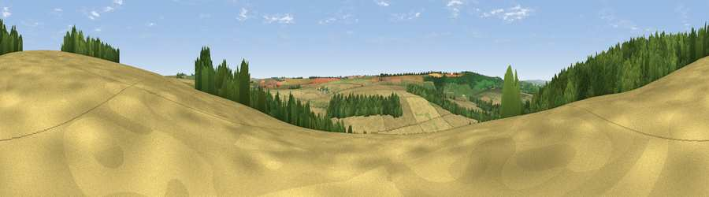

Viewpoint near Wintringham
#29123 in England · top 59% of its area beats it · near WintringhamThe view, rendered

A 360° render of this exact spot computed from the terrain model, tree cover and land cover — summer colours, afternoon light, calibrated against photographs of famous viewpoints. Real trees, hedges and buildings will differ in detail.
The panorama
Grey silhouette: terrain skyline in each direction (720 bearings, Earth curvature and refraction included). Dashed green: skyline with trees (+15 m) and buildings (+8 m) as obstacles. Blue strip: how far the ground is visible on each bearing.
Where the view opens
Wedge length = distance to the farthest visible ground on that bearing (vegetation-aware). Rings at 10, 25 and 50 km.
What fills the view
48% cropland · 40% woodland · 11% grassland
Angular shares of the visible panorama (visual magnitude), not map area. Landscape diversity 0.42 (0–1 Shannon).
Key numbers
More beautiful places nearby
The staircase of upgrades: each row has a higher view potential than everything closer. Driving times are estimates from straight-line distance, calibrated against real road routing — check an actual route before setting out.
| Place | Direction | Drive | Score |
|---|---|---|---|
| Viewpoint near West Heslerton | N · 2 km | ~5 min | 52.5 |
| East Heslerton Brow | NE · 3 km | ~7 min | 61.4 |
| Viewpoint near West Heslerton | NE · 3 km | ~8 min | 70.5 |
| Viewpoint near Settrington | WSW · 5 km | ~12 min | 72.3 |
| Viewpoint near Leavening | SW · 15 km | ~27 min | 73.7 |
| Viewpoint near Acklam | SW · 16 km | ~28 min | 73.8 |
| Seamer Beacon | NE · 18 km | ~31 min | 76.9 |
| Olivers Mount | NE · 20 km | ~33 min | 80.3 |
54.14379, -0.61953 · source: screening · position refined by local search. Computed location — check access rights before visiting.